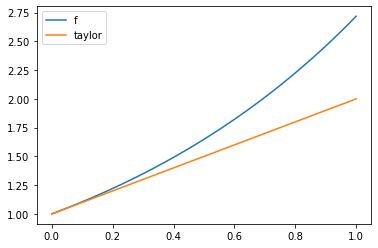
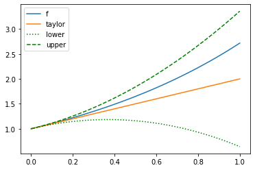
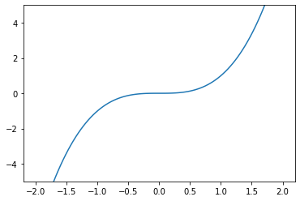
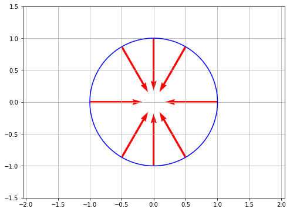
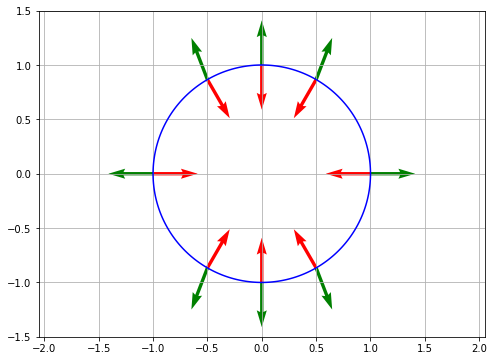

\(\newcommand{\bSigma}{\boldsymbol{\Sigma}}\) \(\newcommand{\bmu}{\boldsymbol{\mu}}\) \(\newcommand{\blambda}{\boldsymbol{\lambda}}\)
6.3. Optimality conditions and convexity#
In this section, we derive optimality conditions for unconstrained continuous optimization problems.
We will be interested in unconstrained optimization of the form:
where \(f : \mathbb{R}^d \to \mathbb{R}\). In this subsection, we define several notions of solution and derive characterizations.
Recall the definition of a global minimizer.
DEFINITION (Global minimizer) Let \(f : \mathbb{R}^d \to \mathbb{R}\). The point \(\mathbf{x}^* \in \mathbb{R}^d\) is a global minimizer of \(f\) over \(\mathbb{R}^d\) if
\(\natural\)
We have observed before that, in general, finding a global minimizer and certifying that one has been found can be difficult unless some special structure is present. Therefore weaker notions of solution are needed. Recall the notion of a local minimizer.
DEFINITION (Local minimizer) Let \(f : \mathbb{R}^d \to \mathbb{R}\). The point \(\mathbf{x}^* \in \mathbb{R}^d\) is a local minimizer of \(f\) over \(\mathbb{R}^d\) if there is \(\delta > 0\) such that
If the inequality is strict, we say that \(\mathbf{x}^*\) is a strict local minimizer. \(\natural\)
In words, \(\mathbf{x}^*\) is a local minimizer if there is open ball around \(\mathbf{x}^*\) where it attains the minimum value. The difference between global and local minimizers is illustrated in the next figure.
Figure: Local and global optima. (Source)
{kind=link}

\(\bowtie\)
6.3.1. First-order conditions#
Local minimizers can be characterized in terms of the gradient. We first define the concept of directional derivative.
Directional derivative Partial derivatives measure the rate of change of a function along the axes. More generally:
DEFINITION (Directional Derivative) Let \(f : D \to \mathbb{R}\) where \(D \subseteq \mathbb{R}^d\), let \(\mathbf{x}_0 = (x_{0,1},\ldots,x_{0,d}) \in D\) be an interior point of \(D\) and let \(\mathbf{v} = (v_1,\ldots,v_d) \in \mathbb{R}^d\) be a nonzero vector. The directional derivative of \(f\) at \(\mathbf{x}_0\) in the direction \(\mathbf{v}\) is
provided the limit exists. \(\natural\)
Typically, \(\mathbf{v}\) is a unit vector.
Note that taking \(\mathbf{v} = \mathbf{e}_i\) recovers the \(i\)-th partial derivative
Conversely, a general directional derivative can be expressed in terms of the partial derivatives.
THEOREM (Directional Derivative from Gradient) Let \(f : D \to \mathbb{R}\) where \(D \subseteq \mathbb{R}^d\), let \(\mathbf{x}_0 \in D\) be an interior point of \(D\) and let \(\mathbf{v} \in \mathbb{R}^d\) be a vector. Assume that \(f\) is continuously differentiable at \(\mathbf{x}_0\). Then the directional derivative of \(f\) at \(\mathbf{x}_0\) in the direction \(\mathbf{v}\) is given by
\(\sharp\)
Proof idea: To bring out the partial derivatives, we re-write the directional derivative as the derivative of a composition of \(f\) with an affine function. We then use the Chain Rule.
Proof: Consider the composition \(\beta(h) = f(\boldsymbol{\alpha}(h))\) where \(\boldsymbol{\alpha}(h) = \mathbf{x}_0 + h \mathbf{v}\). Observe that \(\boldsymbol{\alpha}(0)= \mathbf{x}_0\) and \(\beta(0)= f(\mathbf{x}_0)\). Then, by definition of the derivative,
Applying the Chain Rule and the Parametric Line Example from the previous section, we arrive at
\(\square\)
Figure: Directional derivative (Source)
{kind=link}

\(\bowtie\)
THINK-PAIR-SHARE: Let \(f : \mathbb{R}^2 \to \mathbb{R}\) be continuously differentiable. Suppose that
where \(\mathbf{v} = (1,2)/\sqrt{5}\) and \(\mathbf{w} = (2,1)/\sqrt{5}\). Compute the gradient of \(f\) at \(\mathbf{x}_0\). \(\ddagger\)
Descent direction Earlier in the book, we proved a key insight about the derivative of a single-variable function \(f\) at a point \(x_0\): it tells us where to find smaller values.
LEMMA (Descent Direction) Let \(f : D \to \mathbb{R}\) with \(D \subseteq \mathbb{R}\) and let \(x_0 \in D\) be an interior point of \(D\) where \(f'(x_0)\) exists. If \(f'(x_0) > 0\), then there is an open ball \(B_\delta(x_0) \subseteq D\) around \(x_0\) such that for each \(x\) in \(B_\delta(x_0)\):
(a) \(f(x) > f(x_0)\) if \(x > x_0\),
(b) \(f(x) < f(x_0)\) if \(x < x_0\).
If instead \(f'(x_0) < 0\), the opposite holds. \(\flat\)
We generalize the Descent Direction Lemma to the multivariable case. We first need to define what a descent direction is.
DEFINITION (Descent Direction) Let \(f : \mathbb{R}^d \to \mathbb{R}\). A vector \(\mathbf{v}\) is a descent direction for \(f\) at \(\mathbf{x}_0\) if there is \(\alpha^* > 0\) such that
\(\natural\)
In the continuously differentiable case, the directional derivative gives a criterion for descent directions.
LEMMA (Descent Direction and Directional Derivative) Let \(f : \mathbb{R}^d \to \mathbb{R}\) be continuously differentiable at \(\mathbf{x}_0\). A vector \(\mathbf{v}\) is a descent direction for \(f\) at \(\mathbf{x}_0\) if
that is, if the directional derivative of \(f\) at \(\mathbf{x}_0\) in the direction \(\mathbf{v}\) is negative. \(\flat\)
Proof idea: In anticipation of the proof of the second-order condition, we use the Mean Value Theorem to show that \(f\) takes smaller values in direction \(\mathbf{v}\). A simpler proof based on the definition of the directional derivative is also possible (Try it!).
Proof: Suppose there is \(\mathbf{v} \in \mathbb{R}^d\) such that \(\nabla f(\mathbf{x}_0)^T \mathbf{v} = -\eta < 0\). For \(\alpha > 0\), the Mean Value Theorem implies that there is \(\xi_\alpha \in (0,1)\) such that
We want to show that the second term on the right-hand side is negative. We cannot immediately apply our condition on \(\mathbf{v}\) as the gradient in the previous equation is taken at \(\mathbf{x}_0 + \xi_\alpha \alpha \mathbf{v}\), not \(\mathbf{x}_0\).
The gradient is continuous (in the sense that all its components are continuous). In particular, the function \(\nabla f(\mathbf{x})^T \mathbf{v}\) is continuous as a linear combination of continuous functions. By the definition of continuity, for any \(\epsilon > 0\) - say \(\epsilon = \eta/2\) - there is \(\delta > 0\) small enough such that all \(\mathbf{x} \in B_\delta(\mathbf{x}_0)\) satisfy
Take \(\alpha^* > 0\) small enough that \(\mathbf{x}_0 + \alpha^* \mathbf{v} \in B_\delta(\mathbf{x}_0)\). Then, for all \(\alpha \in (0,\alpha^*)\), whatever \(\xi_\alpha \in (0,1)\) is, it holds that \(\mathbf{x}_0 + \xi_\alpha \alpha \mathbf{v} \in B_\delta(\mathbf{x}_0)\). Hence,
by definition of \(\eta\). That implies
and proves the claim. \(\square\)
LEMMA (Descent Direction: Multivariable Version) Let \(f : \mathbb{R}^d \to \mathbb{R}\) be continuously differentiable at \(\mathbf{x}_0\) and assume that \(\nabla f(\mathbf{x}_0) \neq 0\). Then \(f\) has a descent direction at \(\mathbf{x}_0\). \(\flat\)
Proof: Take \(\mathbf{v} = - \nabla f(\mathbf{x}_0)\). Then \(\nabla f(\mathbf{x}_0)^T \mathbf{v} = - \|\nabla f(\mathbf{x}_0)\|^2 < 0\) since \(\nabla f(\mathbf{x}_0) \neq \mathbf{0}\). \(\square\)
This leads to the following fundamental result.
THEOREM (First-Order Necessary Conditions) Let \(f : \mathbb{R}^d \to \mathbb{R}\) be continuously differentiable on \(\mathbb{R}^d\). If \(\mathbf{x}_0\) is a local minimizer, then \(\nabla f(\mathbf{x}_0) = \mathbf{0}\). \(\sharp\)
Proof idea: In a descent direction, \(f\) decreases hence there cannot be one at a local minimizer.
Proof: We argue by contradiction. Suppose that \(\nabla f(\mathbf{x}_0) \neq 0\). By the Descent Direction Lemma, there is a descent direction \(\mathbf{v} \in \mathbb{R}^d\) at \(\mathbf{x}_0\). That implies
for some \(\alpha^* > 0\). So every open ball around \(\mathbf{x}_0\) has a point achieving a smaller value than \(f(\mathbf{x}_0)\). Thus \(\mathbf{x}_0\) is not a local minimizer, a contradiction. So it must be that \(\nabla f(\mathbf{x}_0) = \mathbf{0}\). \(\square\)
A point satisfying the first-order necessary conditions is called a stationary point.
DEFINITION (Stationary Point) Let \(f : D \to \mathbb{R}\) be continuously differentiable on an open set \(D \subseteq \mathbb{R}^d\). If \(\nabla f(\mathbf{x}_0) = \mathbf{0}\), we say that \(\mathbf{x}_0 \in D\) is a stationary point of \(f\). \(\natural\)
EXAMPLE: (Rayleight Quotient) Let \(A \in \mathbb{R}^{d \times d}\) be a symmetric matrix. The associated Rayleigh quotient is
which is defined for any \(\mathbf{u} = (u_1,\ldots,u_d) \neq \mathbf{0}\) in \(\mathbb{R}^{d}\). As a function from \(\mathbb{R}^{d}\) to \(\mathbb{R}\setminus \{\mathbf{0}\}\), \(\mathcal{R}_A(\mathbf{u})\) is continuously differentiable. We find its stationary points.
We use the quotient rule and our previous results on the gradient of quadratic functions. Specifically, note that (using that \(A\) is symmetric)
In vector form this is
The stationary points satisfy \(\nabla \mathcal{R}_A(\mathbf{u}) = \mathbf{0}\), or after getting rid of the denominator and rearranging,
The solutions to this system are eigenvectors of \(A\), that is, they satisfy \(A\mathbf{u} = \lambda \mathbf{u}\) for some eigenvalue \(\lambda\). If \(\mathbf{q}_i\) is a unit eigenvector of \(A\) with eigenvalue \(\lambda_i\), then we have that \(\mathcal{R}_A(\mathbf{q}_i) = \lambda_i\) (Check it!) and
The eigenvectors of \(A\) are not in general local minimizers of its Rayleigh quotient. In fact one of them – the largest one – is a global maximizer! \(\lhd\)
6.3.2. Second-order conditions#
Local minimizers can also be characterized in terms of the Hessian.
We will make use of Taylor’s Theorem, a generalization of the Mean Value Theorem that provides polynomial approximations to a function around a point. We restrict ourselves to the case of a linear approximation with second-order error term, which will suffice for our purposes.
Taylor’s theorem We begin by reviewing the single-variable case, which we will use to prove the general verison.
THEOREM (Taylor) Let \(f: D \to \mathbb{R}\) where \(D \subseteq \mathbb{R}\). Suppose \(f\) has a continuous derivative on \([a,b]\) and that its second derivative exists on \((a,b)\). Then for any \(x \in [a, b]\)
for some \(a < \xi < x\). \(\sharp\)
The third term on the right-hand side of Taylor’s Theorem is called the Lagrange remainder. It can be seen as an error term between \(f(x)\) and the linear approximation \(f(a) + (x-a) f'(a)\). There are other forms for the remainder. The form we stated here is useful when one has a bound on the second derivative. Here is an example.
EXAMPLE: Consider \(f(x) = e^x\). Then \(f'(x) = f''(x) = e^x\). Suppose we are interested in approximating \(f\) in the interval \([0,1]\). We take \(a=0\) and \(b=1\) in Taylor’s Theorem. The linear term is
Then for any \(x \in [0,1]\)
where \(\xi_x \in (0,1)\) depends on \(x\). We get a uniform bound on the error over \([0,1]\) by replacing \(\xi_x\) with its worst possible value over \([0,1]\)
x = np.linspace(0,1,100)
y = np.exp(x)
taylor = 1 + x
err = (np.exp(1)/2) * x**2
Show code cell source
plt.plot(x,y,label='f')
plt.plot(x,taylor,label='taylor')
plt.legend()
plt.show()

If we plot the upper and lower bounds, we see that \(f\) indeed falls within them.
Show code cell source
plt.plot(x,y,label='f')
plt.plot(x,taylor,label='taylor')
plt.plot(x,taylor-err,linestyle=':',color='green',label='lower')
plt.plot(x,taylor+err,linestyle='--',color='green',label='upper')
plt.legend()
plt.show()

\(\lhd\)
In the case of several variables, we again restrict ourselves to the second order. For the more general version, see e.g. Wikipedia.
THEOREM (Taylor) Let \(f : D \to \mathbb{R}\) where \(D \subseteq \mathbb{R}^d\). Let \(\mathbf{x}_0 \in D\) and \(\delta > 0\) be such that \(B_\delta(\mathbf{x}_0) \subseteq D\). If \(f\) is twice continuously differentiable on \(B_\delta(\mathbf{x}_0)\), then for any \(\mathbf{x} \in B_\delta(\mathbf{x}_0)\)
for some \(\xi \in (0,1)\). \(\sharp\)
As in the single-variable case, we think of \(f(\mathbf{x}_0) + \nabla f(\mathbf{x}_0)^T (\mathbf{x} - \mathbf{x}_0)\) for fixed \(\mathbf{x}_0\) as a linear - or more accurately affine - approximation to \(f\) at \(\mathbf{x}_0\). The third term on the right-hand side above quantifies the error of this approximation.
Proof idea: We apply the single-variable result to \(\phi(t) = f(\boldsymbol{\alpha}(t))\). We use the Chain Rule to compute the needed derivatives.
Proof: Let \(\mathbf{p} = \mathbf{x} - \mathbf{x}_0\) and \(\phi(t) = f(\boldsymbol{\alpha}(t))\) where \(\boldsymbol{\alpha}(t) = \mathbf{x}_0 + t \mathbf{p}\). Observe that \(\phi(0) = f(\mathbf{x}_0)\) and \(\phi(1) = f(\mathbf{x})\). As observed in the proof of the Mean Value Theorem, \(\phi'(t) = \nabla f(\boldsymbol{\alpha}(t))^T \mathbf{p}\). By the Chain Rule and our previous Parametric Line Example,
In particular, \(\phi\) has continuous first and second derivatives on \([0,1]\).
By Taylor’s Theorem in the single-variable case
for some \(\xi \in (0,t)\). Plugging in the expressions for \(\phi(0)\), \(\phi'(0)\) and \(\phi''(\xi)\) and taking \(t=1\) gives the claim. \(\square\)
EXAMPLE: Consider the function \(f(x_1, x_2) = x_1 x_2 + x_1^2 + e^{x_1} \cos x_2\). We apply Taylor’s Theorem with \(\mathbf{x}_0 = (0, 0)\) and \(\mathbf{x} = (x_1, x_2)\). The gradient is
and the Hessian is
So \(f(0,0) = 1\) and \(\nabla f(0,0) = (1, 0)^T\). Thus, by Taylor’s Theorem, there is \(\xi \in (0,1)\) such that
\(\lhd\)
Second directional derivative To control the error term in Taylor’s Theorem, it will be convenient to introduce a notion of second directional derivative.
DEFINITION (Second Directional Derivative) Let \(f : D \to \mathbb{R}\) where \(D \subseteq \mathbb{R}^d\), let \(\mathbf{x}_0 \in D\) be an interior point of \(D\) and let \(\mathbf{v} \in \mathbb{R}^d\) be a nonzero vector. The second directional derivative of \(f\) at \(\mathbf{x}_0\) in the direction \(\mathbf{v}\) is
provided the limit exists. \(\natural\)
Typically, \(\mathbf{v}\) is a unit vector.
THEOREM (Second Directional Derivative from Hessian) Let \(f : D \to \mathbb{R}\) where \(D \subseteq \mathbb{R}^d\), let \(\mathbf{x}_0 \in D\) be an interior point of \(D\) and let \(\mathbf{v} \in \mathbb{R}^d\) be a vector. Assume that \(f\) is twice continuously differentiable at \(\mathbf{x}_0\). Then the second directional derivative of \(f\) at \(\mathbf{x}_0\) in the direction \(\mathbf{v}\) is given by
\(\sharp\)
Note the similarity to the quadratic term in Taylor’s Theorem.
Proof idea: We have already done this calculation in the proof of Taylor’s Theorem.
Proof: Then, by definition of the derivative,
where \(g_i(\mathbf{x}_0) = \frac{\partial f(\mathbf{x}_0)}{\partial x_i}\). So
by the Directional Derivative from Gradient Theorem. Plugging back above we get
\(\square\)
So going back to Taylor’s Theorem
we see that the second term on the right-hand side is the directional derivative at \(\mathbf{x}_0\) in the direction \(\mathbf{x} - \mathbf{x}_0\) and that the third term is half of the second directional derivative at \(\mathbf{x}_0 + \xi (\mathbf{x} - \mathbf{x}_0)\) in the same direction.
Necessary condition When \(f\) is twice continuously differentiable, we get a necessary condition based on the Hessian.
THEOREM (Second-Order Necessary Condition) Let \(f : \mathbb{R}^d \to \mathbb{R}\) be twice continuously differentiable on \(\mathbb{R}^d\). If \(\mathbf{x}_0\) is a local minimizer, then \(\nabla f(\mathbf{x}_0) = \mathbf{0}\) and \(\mathbf{H}_f(\mathbf{x}_0)\) is positive semidefinite. \(\sharp\)
Proof idea: By Taylor and the First-Order Necessary Condition,
If \(\mathbf{H}_f\) is positive semidefinite in a neighborhood around \(\mathbf{x}_0\), then the second term on the right-hand side is nonnegative, which is necessary for \(\mathbf{x}_0\) to be a local minimizer. Formally we argue by contradiction: indeed, if \(\mathbf{H}_f\) is not positive semidefinite, then there must exists a direction in which the second directional derivative is negative; since the gradient is \(\mathbf{0}\) at \(\mathbf{x}_0\), intuitively the directional derivative must become negative in that direction as well and the function must decrease.
Proof: We argue by contradiction. Suppose that \(\mathbf{H}_f(\mathbf{x}_0)\) is not positive semidefinite. By definition, there must be a unit vector \(\mathbf{v}\) such that
That is, \(\mathbf{v}\) is a direction in which the second directional derivative is negative.
For \(\alpha > 0\), Taylor’s Theorem implies that there is \(\xi_\alpha \in (0,1)\) such that
where we used \(\nabla f(\mathbf{x}_0) = \mathbf{0}\) by the First-Order Necessary Condition. We want to show that the second term on the right-hand side is negative.
The Hessian is continuous (in the sense that all its entries are continuous functions of \(\mathbf{x}\)). In particular, the second directional derivative \(\mathbf{v}^T \mathbf{H}_f(\mathbf{x}) \,\mathbf{v}\) is continuous as a linear combination of continuous functions. So, by definition of continuity, for any \(\epsilon > 0\) - say \(\epsilon = \eta/2\) - there is \(\delta > 0\) small enough that
for all \(\mathbf{x} \in B_\delta(\mathbf{x}_0)\).
Take \(\alpha^* > 0\) small enough that \(\mathbf{x}_0 + \alpha^* \mathbf{v} \in B_\delta(\mathbf{x}_0)\). Then, for all \(\alpha \in (0,\alpha^*)\), whatever \(\xi_\alpha \in (0,1)\) is, it holds that \(\mathbf{x}_0 + \xi_\alpha \alpha \mathbf{v} \in B_\delta(\mathbf{x}_0)\). Hence,
by definition of \(\eta\). That implies
Since this holds for all sufficiently small \(\alpha\), every open ball around \(\mathbf{x}_0\) has a point achieving a lower value than \(f(\mathbf{x}_0)\). Thus \(\mathbf{x}_0\) is not a local minimizer, a contradiction. So it must be that \(\mathbf{H}_f(\mathbf{x}_0) \succeq \mathbf{0}\). \(\square\)
Sufficient condition The necessary condition above is not in general sufficient, as the following example shows.
EXAMPLE: Let \(f(x) = x^3\). Then \(f'(x) = 3 x^2\) and \(f''(x) = 6 x\) so that \(f'(0) = 0\) and \(f''(0) \geq 0\). Hence \(x=0\) is a stationary point. But \(x=0\) is not a local minimizer. Indeed \(f(0) = 0\) but, for any \(\delta > 0\), \(f(-\delta) < 0\).
x = np.linspace(-2,2,100)
y = x**3
Show code cell source
plt.plot(x,y)
plt.ylim(-5,5)
plt.show()

\(\lhd\)
We give sufficient conditions for a point to be a local minimizer. The proof is relegated to an optional section.
THEOREM (Second-Order Sufficient Condition) Let \(f : \mathbb{R}^d \to \mathbb{R}\) be twice continuously differentiable on \(\mathbb{R}^d\). If \(\nabla f(\mathbf{x}_0) = \mathbf{0}\) and \(\mathbf{H}_f(\mathbf{x}_0)\) is positive definite, then \(\mathbf{x}_0\) is a strict local minimizer. \(\sharp\)
Proof idea: We use Taylor’s Theorem again. This time we use the positive definiteness of the Hessian to bound the value of the function from below.
6.3.3. Adding equality constraints#
Until now, we have considered unconstrained optimization problems, that is, the variable \(\mathbf{x}\) can take any value in \(\mathbb{R}^d\). However, it is common to impose conditions on \(\mathbf{x}\). Hence, we consider the constrained minimization problem
where \(\mathscr{X} \subset \mathbb{R}^d\).
EXAMPLE: For instance, the entries of \(\mathbf{x}\) may have to satisfy certain bounds. In that case, we would have
for some constants \(a_i < b_i\), \(i=1,\ldots,d\). \(\lhd\)
In this more general problem, the notion of global and local minimizer can be adapter straighforwardly. Note that we will assume that \(f\) is defined over all of \(\mathbb{R}^d\). When \(\mathbf{x} \in \mathscr{X}\), it is said to be feasible.
DEFINITION (Global minimizer) Let \(f : \mathbb{R}^d \to \mathbb{R}\). The point \(\mathbf{x}^* \in \mathscr{X}\) is a global minimizer of \(f\) over \(\mathscr{X}\) if
\(\natural\)
DEFINITION (Local minimizer) Let \(f : \mathbb{R}^d \to \mathbb{R}\). The point \(\mathbf{x}^* \in \mathscr{X}\) is a local minimizer of \(f\) over \(\mathscr{X}\) if there is \(\delta > 0\) such that
If the inequality is strict, we say that \(\mathbf{x}^*\) is a strict local minimizer. \(\natural\)
In this subsection, we restrict ourselves to one important class of constraints: equality constraints. That is, we consider the minimization problem
where s.t. stands for “subject to”. In other words, we only allow those \(\mathbf{x}'s\) such that \(h_i(\mathbf{x}) = 0\) for all \(i\). Here \(f : \mathbb{R}^d \to \mathbb{R}\) and \(h_i : \mathbb{R}^d \to \mathbb{R}\), \(i\in [\ell]\). We will sometimes use the notation \(\mathbf{h} : \mathbb{R}^d \to \mathbb{R}^\ell\), where \(\mathbf{h}(\mathbf{x}) = (h_1(\mathbf{x}), \ldots, h_\ell(\mathbf{x}))\).
EXAMPLE: If we want to minimize \(2 x_1^2 + 3 x_2^2\) over all two-dimensional unit vectors \(\mathbf{x} = (x_1, x_2)\), then we can let
and
Observe that we could have chosen a different equality constraint to express the same minimization problem. \(\lhd\)
The following theorem generalizes the First-Order Necessary Conditions. The proof is detailed in an optional section.
THEOREM (Lagrange Multipliers: First-Order Necessary Conditions) Assume \(f : \mathbb{R}^d \to \mathbb{R}\) and \(h_i : \mathbb{R}^d \to \mathbb{R}\), \(i\in [\ell]\), are continuously differentiable. Let \(\mathbf{x}^*\) be a local minimizer of \(f\) s.t. \(\mathbf{h}(\mathbf{x}) = \mathbf{0}\). Assume further that the vectors \(\nabla h_i (\mathbf{x}^*)\), \(i \in [\ell]\), are linearly independent. Then there exists a unique vector
satisfying
\(\sharp\)
The quantities \(\lambda_1^*, \ldots, \lambda_\ell^*\) are called Lagrange multipliers.
Proof idea: We reduce the problem to an unconstrained optimization problem by penalizing the constraint in the objective function. We then apply the unconstrained First-Order Necessary Conditions.
EXAMPLE: (continued) Returning to the previous example,
and
The conditions in the theorem read
The constraint \(x_1^2 + x_2^2 = 1\) must also be satisfied. Observe that the linear independence condition is automatically satisfied since there is only one constraint.
There are several cases to consider.
1- If neither \(x_1\) nor \(x_2\) is \(0\), then the first equation gives \(\lambda_1 = 2\) while the second one gives \(\lambda_1 = 3\). So that case cannot happen.
2- If \(x_1 = 0\), then \(x_2 = 1\) or \(x_2 = -1\) by the constraint and the second equation gives \(\lambda_1 = 3\) in either case.
3- If \(x_2 = 0\), then \(x_1 = 1\) or \(x_1 = -1\) by the constraint and the first equation gives \(\lambda_1 = 2\) in either case.
Does any of these last four solutions, i.e., \((x_1,x_2,\lambda_1) = (0,1,3)\), \((x_1,x_2,\lambda_1) = (0,-1,3)\), \((x_1,x_2,\lambda_1) = (1,0,2)\) and \((x_1,x_2,\lambda_1) = (-1,0,2)\), actually correspond to a local minimizer?
This problem can be solved manually. Indeed, replace \(x_2^2 = 1 - x_1^2\) into the objective function to obtain
This is minimized for the largest value that \(x_1^2\) can take, namely when \(x_1 = 1\) or \(x_1 = -1\). Indeed, we must have \(0 \leq x_1^2 \leq x_1^2 + x_2^2 = 1\). So both \((x_1, x_2) = (1,0)\) and \((x_1, x_2) = (-1,0)\) are global minimizers. A fortiori, they must be local minimizers.
What about \((x_1,x_2) = (0,1)\) and \((x_1,x_2) = (0,-1)\)? Arguing as above, they in fact correspond to global maximizers of the objective function. \(\lhd\)
Assume \(\mathbf{x}\) is feasible, that is, \(\mathbf{h}(\mathbf{x}) = \mathbf{0}\). We let
be the (linear) subspace of first-order feasible directions at \(\mathbf{x}\). To explain the name, note that by a first-order Taylor expansion, if \(\mathbf{v} \in \mathscr{F}_{\mathbf{h}}(\mathbf{x})\) then it holds that
for all \(i\).
The theorem says that, if \(\mathbf{x}^*\) is a local minimizer, then the gradient of \(f\) is orthogonal to the set of first-order feasible directions at \(\mathbf{x}^*\). Indeed, any \(\mathbf{v} \in \mathscr{F}_{\mathbf{h}}(\mathbf{x}^*)\) satisfies by the theorem that
Intuitively, following a first-order feasible direction does not improve the objective function
EXAMPLE: (continued) Returning to the previous example, the points satisfying \(h_1(\mathbf{x}) = 0\) sit on the circle of radius \(1\) around the origin. We have already seen that
Here is code plotting these (courtesy of ChatGPT 4). It uses numpy.meshgrid to generate a grid of points for \(x_1\) and \(x_2\), and matplotlib.pyplot.contour to plot the constraint set as a contour line (for the constant value \(0\)) of \(h_1\). The gradients are plotted with the matplotlib.pyplot.quiver function, which is used for plotting vectors as arrows.
# Define the constraint function
def h1(x1, x2):
return 1 - x1**2 - x2**2
# Generate a grid of points for x1 and x2
x1 = np.linspace(-1.5, 1.5, 400)
x2 = np.linspace(-1.5, 1.5, 400)
X1, X2 = np.meshgrid(x1, x2)
# Compute constraint function on grid
H1 = h1(X1, X2)
# Points on the constraint where the gradients will be plotted
points = [
(0.5, np.sqrt(3)/2),
(-0.5, np.sqrt(3)/2),
(0.5, -np.sqrt(3)/2),
(-0.5, -np.sqrt(3)/2),
(1, 0),
(-1, 0),
(0, 1),
(0, -1)
]
Show code cell source
plt.figure(figsize=(8, 6))
plt.grid(True)
plt.axis('equal')
# Plot the constraint set where h1(x1, x2) = 0
plt.contour(X1, X2, H1, levels=[0], colors='blue')
# Plot gradients of h1 (red) at specified points
for x1, x2 in points:
plt.quiver(x1, x2, -2*x1, -2*x2, scale=10, color='red')

The directions of first-order feasible directions are orthogonal to the arrows, and therefore are tangent to the constraint set.
Next we also plot the gradient of \(f\), which recall is
To keep things contained, we make all gradients into unit vectors.
Show code cell source
plt.figure(figsize=(8, 6))
plt.grid(True)
plt.axis('equal')
plt.contour(X1, X2, H1, levels=[0], colors='blue')
for x1, x2 in points:
plt.quiver(x1, x2, -x1/np.sqrt(x1**2 + x2**2),
-x2/np.sqrt(x1**2 + x2**2),
scale=10, color='red')
plt.quiver(x1, x2, 4*x1/np.sqrt(16 * x1**2 + 36 * x2**2),
6*x2/np.sqrt(16 * x1**2 + 36 * x2**2),
scale=10, color='green')

We see that, at \((-1,0)\) and \((1,0)\), the gradient is indeed orthogonal to the first-order feasible directions. \(\lhd\)
A feasible vector \(\mathbf{x}\) is said to be regular if the vectors \(\nabla h_i (\mathbf{x}^*)\), \(i \in [\ell]\), are linearly independent. We re-formulate the previous theorem in terms of the Lagrangian function, which is defined as
where \(\blambda = (\lambda_1,\ldots,\lambda_\ell)\). Then, by the theorem, a regular local minimizer satisfies
Here the notation \(\nabla_{\mathbf{x}}\) (respectively \(\nabla_{\blambda}\)) indicates that we are taking the vector of partial derivatives with respect to only the variables in \(\mathbf{x}\) (respectively \(\blambda\)).
To see that these equations hold, note that
and
So \(\nabla_{\mathbf{x}} L(\mathbf{x}, \blambda) = \mathbf{0}\) is a restatement of the Lagrange multipliers condition and \(\nabla_{\blambda} L(\mathbf{x}, \blambda) = \mathbf{0}\) is a restatement of feasibility. Together, they form a system of \(d + \ell\) equations in \(d + \ell\) variables.
EXAMPLE: Consider the constrained minimization problem on \(\mathbb{R}^3\) where the objective function is
and the only constraint function is
The gradients are
and
In particular, regularity is always satisfied since there is only one non-zero vector to consider.
So we are looking for solutions to the system of equations
The first three equations imply that \(x_1 = x_2 = x_3 = \lambda\). Replacing in the fourth equation gives \(3 - 3 \lambda_1 = 0\) so \(\lambda_1 = 1\). Hence, \(x_1 = x_2 = x_3 = 1\) and this is the only solution.
So any local minimizer, if it exists, must be the vector \((1,1,1)\) with Lagrange multiplier \(1\). How can we know for sure whether this is the case? \(\lhd\)
As in the unconstrained case, we could use a sufficient condition. As in that case as well, it will involve second-order derivatives. We give one such theorem next. The proof is an optional section.
THEOREM (Lagrange Multipliers: Second-Order Sufficient Conditions) Assume \(f : \mathbb{R}^d \to \mathbb{R}\) and \(h_i : \mathbb{R}^d \to \mathbb{R}\), \(i\in [\ell]\), are twice continuously differentiable. Let \(\mathbf{x}^* \in \mathbb{R}^d\) and \(\blambda^* \in \mathbb{R}^\ell\) satisfy
and
for all \(\mathbf{v} \in \mathscr{F}_{\mathbf{h}}(\mathbf{x})\).
Then \(\mathbf{x}^*\) a strict local minimizer of \(f\) s.t. \(\mathbf{h}(\mathbf{x}) = \mathbf{0}\). \(\sharp\)
Proof idea: We consider a slightly modified problem
which has the same local minimizers. Applying the Second-Order Sufficient Conditions to the Lagrangian of the modified problem gives the result when \(c\) is chosen large enough.
EXAMPLE: (continued) We return to the previous example. We found a unique solution
to the system
To check the second-order condition, we need the Hessians. It is straighforward to compute the second-order partial derivatives, which do not depend on \(\mathbf{x}\). We obtain
and
So
and it follows that
for any non-zero vector, including those in \(\mathscr{F}_{\mathbf{h}}(\mathbf{x})\).
It follows from the previous theorem that \(\mathbf{x}^*\) is a strict local minimizer of the constrained problem. \(\lhd\)
6.3.4. Convexity#
Our optimality conditions have only concerned local minimizers. Indeed, in the absence of global structure, local information such as gradients and Hessians can only inform us about the immediate neighborhood of points. Here we introduce convexity, a commonly encountered condition under which local minimizers become global minimizers.
Convex sets We start with convex sets.
DEFINITION (Convex Set) A set \(D \subseteq \mathbb{R}^d\) is convex if for all \(\mathbf{x}, \mathbf{y} \in D\) and all \(\alpha \in (0,1)\)
\(\natural\)
Note that, as \(\alpha\) goes from \(0\) to \(1\),
traces a line joining \(\mathbf{x}\) and \(\mathbf{y}\). In words, a set is convex if all segments between pairs of points in the set also lie in it.
Figure: A convex set (Source)
{kind=link}

\(\bowtie\)
Figure: A set that is not convex (Source)
{kind=link}

\(\bowtie\)
EXAMPLE: An open ball in \(\mathbb{R}^d\) is convex. Indeed, let \(\delta > 0\) and \(\mathbf{x}_0 \in \mathbb{R}^d\). For any \(\mathbf{x}, \mathbf{y} \in B_{\delta}(\mathbf{x}_0)\) and any \(\alpha \in [0,1]\), we have
where we used the triangle inequality on the second line. Hence we have established that \((1-\alpha) \mathbf{x} + \alpha \mathbf{y} \in B_{\delta}(\mathbf{x}_0)\).
One remark. All we used in this argument is that the Euclidean norm is homogeneous and satisfies the triangle inequality. That is true of every norm. So we conclude that an open ball under any norm is convex. Also, the open nature of the set played no role. The same holds for closed balls in any norm. \(\lhd\)
EXAMPLE: Here is an important generalization. Think of the space of \(n \times n\) symmetric matrices
as a linear subspace of \(\mathbb{R}^{n^2}\) (How?). The dimension of \(\mathbf{S}^n\) is \({n \choose 2} + n\), the number of free parameters under the symmetry assumption. Consider now the set of all positive semidefinite matrices in \(\mathbf{S}^n\)
(Recall that \(\mathbf{S}_+^n\) is not the same as the set of symmetric matrices with nonnegative elements.)
We claim that the set \(\mathbf{S}_+^n\) is convex. Indeed let \(X, Y \in \mathbf{S}_+^n\) and \(\alpha \in [0,1]\). Then by postive semidefiniteness of \(X\) and \(Y\), for any \(\mathbf{v} \in \mathbb{R}^n\)
This shows that \((1-\alpha) X + \alpha Y \succeq \mathbf{0}\) and hence that \(\mathbf{S}_+^n\) is convex. \(\lhd\)
A number of operations preserve convexity. In an abuse of notation, we think of a pair of vectors \((\mathbf{x}_1, \mathbf{x}_2) \in \mathbb{R}^d \times \mathbb{R}^{f}\) as a vector in \(\mathbb{R}^{d+f}\). Put differently, \((\mathbf{x}_1, \mathbf{x}_2)\) is the vertical concatenation of column vectors \(\mathbf{x}_1\) and \(\mathbf{x}_2\). This is not to be confused with \(\begin{pmatrix}\mathbf{x}_1 & \mathbf{x}_2\end{pmatrix}\) which is the \(d \times 2\) matrix with columns \(\mathbf{x}_1\) and \(\mathbf{x}_2\).
LEMMA (Operations that Preserve Convexity) Let \(S_1, S_2 \subseteq \mathbb{R}^d\), \(S_3 \subseteq \mathbb{R}^{f}\), and \(S_4 \subseteq \mathbb{R}^{d+f}\) be convex sets. Let \(\beta \in \mathbb{R}\) and \(\mathbf{b} \in \mathbb{R}^d\). The following sets are also convex:
a) Scaling: \(\beta S_1 = \{\beta \mathbf{x}\,:\, \mathbf{x} \in S_1\}\)
b) Translation: \(S_1 + \mathbf{b} = \{\mathbf{x} + \mathbf{b}\,:\, \mathbf{x} \in S_1\}\)
c) Sum: \(S_1 + S_2 = \{\mathbf{x}_1 + \mathbf{x}_2\,:\, \mathbf{x}_1 \in S_1 \text{ and } \mathbf{x}_2 \in S_2\}\)
d) Cartesian product: \(S_1 \times S_3 = \{(\mathbf{x}_1, \mathbf{x}_2) \,:\, \mathbf{x}_1 \in S_1 \text{ and } \mathbf{x}_2 \in S_3\}\)
e) Projection: \(T = \{\mathbf{x}_1\,:\, (\mathbf{x}_1, \mathbf{x}_2) \in S_4 \text{ for some }\mathbf{x}_2 \in \mathbb{R}^f\}\)
f) Intersection: \(S_1 \cap S_2\)
\(\flat\)
Proof: We only prove f). The other statements are left as an exercise. Suppose \(\mathbf{x}, \mathbf{y} \in S_1 \cap S_2\) and \(\alpha \in [0,1]\). Then, by the convexity of \(S_1\), \((1-\alpha) \mathbf{x} + \alpha \mathbf{y} \in S_1\) and, by the convexity of \(S_2\), \((1-\alpha) \mathbf{x} + \alpha \mathbf{y} \in S_2\). Hence
This property can be extended to an intersection of an arbitrary number of convex sets. \(\square\)
Convex functions Our main interest is in convex functions.
Here is the definition.
DEFINITION (Convex Function) A function \(f : \mathbb{R}^d \to \mathbb{R}\) is convex if, for all \(\mathbf{x}, \mathbf{y} \in \mathbb{R}^d\) and all \(\alpha \in (0,1)\)
More generally, a function \(f : D \to \mathbb{R}\) with a convex domain \(D \subseteq \mathbb{R}^d\) is said to be convex over \(D\) if the definition above holds over all \(\mathbf{x}, \mathbf{y} \in D\). A function is said to be strictly convex if a strict inequality holds. If \(-f\) is convex (respectively, strictly convex), then \(f\) is said to be concave (respectively, strictly concave). \(\natural\)
The definition above is sometimes referred to as the secant line definition (see the next figure).
Figure: A convex function (Source)
{kind=link}

\(\bowtie\)
LEMMA (Affine Functions are Convex) Let \(\mathbf{w} \in \mathbb{R}^d\) and \(b \in \mathbb{R}\). The function \(f(\mathbf{x}) = \mathbf{w}^T \mathbf{x} + b\) is convex. \(\flat\)
Proof: For any \(\mathbf{x}, \mathbf{y} \in \mathbb{R}^d\) and \(\alpha \in [0,1]\),
which proves the claim. \(\square\)
Here is a less straightforward example. A concrete application is given below.
LEMMA (Infimum over a Convex Set) Let \(f : \mathbb{R}^{d+f} \to \mathbb{R}\) be a convex function and let \(C \subseteq \mathbb{R}^{f}\) be a convex set. The function
is convex provided \(g(\mathbf{x}) > -\infty\) for all \(\mathbf{x} \in \mathbb{R}^d\). \(\flat\)
Proof: Let \(\mathbf{x}_1, \mathbf{x}_2 \in \mathbb{R}^d\) and \(\alpha \in [0,1]\). For \(i=1,2\), by definition of \(g\), for any \(\epsilon > 0\) there is \(\mathbf{y}_i \in C\) such that \(f(\mathbf{x}_i, \mathbf{y}_i) \leq g(\mathbf{x}_i) + \epsilon\).
By the convexity of \(C\), \(\alpha \mathbf{y}_1 + (1- \alpha)\mathbf{y}_2 \in C\). So because \(g\) is an infimum over points \(\mathbf{y}\) in \(C\), we have
where we used the convexity of \(f\) on the second line. Because \(\epsilon > 0\) is arbitrary, the claim follows. \(\square\)
EXAMPLE: (Distance to a Convex Set) Let \(C\) be a convex set in \(\mathbb{R}^d\). We show that the distance to \(C\)
is convex.
To apply the previous lemma, we first need to show that \(f(\mathbf{x},\mathbf{y}) := \|\mathbf{x} - \mathbf{y}\|_2\) is convex as a function of \((\mathbf{x}, \mathbf{y})\). Let \(\mathbf{x}_1, \mathbf{x}_2 \in \mathbb{R}^d\), \(\mathbf{y}_1, \mathbf{y}_2 \in C\), and \(\alpha \in [0,1]\). We want to show that \(f\) evaluated at the convex combination
is upper bounded by the same convex combination of the values of \(f\) at \((\mathbf{x}_1,\mathbf{y}_1)\) and \((\mathbf{x}_2,\mathbf{y}_2)\).
By the triangle inequality and the homogeneity of the norm,
It remains to show that \(g(\mathbf{x}) > -\infty\) for all \(\mathbf{x}\). But this is immediate since \(\|\mathbf{x} - \mathbf{y}\|_2 \geq 0\). Hence the previous lemma gives the claim. \(\lhd\)
Conditions based on the gradient and Hessian A common way to prove that a function is convex is to look at its Hessian (or second derivative in the single-variable case). But we start with a first-order characterization of convexity.
Throughout, when we say that a function \(f : D \to \mathbb{R}\) is continuously differentiable, we implicitly assume that \(D\) is open or that \(D\) is contained in an open set where \(f\) is continuously differentiable. Same for twice continuously differentiable.
LEMMA (First-Order Convexity Condition) Let \(f : D \to \mathbb{R}\) be continuously differentiable, where \(D \subseteq \mathbb{R}^d\) is convex. Then \(f\) is convex over \(D\) if and only if
\(\flat\)
On the right-hand side above, you should recognize the linear approximation to \(f\) at \(\mathbf{x}\) from Taylor’s Theorem without the remainder.
Figure: Illustration of first-order convexity condition (Source)

\(\bowtie\)
Proof (First-Order Convexity Condition): Suppose first that \(f(\mathbf{z}_2) \geq f(\mathbf{z}_1) + \nabla f(\mathbf{z}_1)^T (\mathbf{z}_2-\mathbf{z}_1)\) for all \(\mathbf{z}_1, \mathbf{z}_2 \in D\). For any \(\mathbf{x}, \mathbf{y} \in D\) and \(\alpha \in [0,1]\), let \(\mathbf{w} = (1-\alpha) \mathbf{x} + \alpha \mathbf{y}\) (which is in \(D\) by convexity). Then taking \(\mathbf{z}_1 = \mathbf{w}\) and \(\mathbf{z}_2 = \mathbf{x}\) gives
and taking \(\mathbf{z}_1 = \mathbf{w}\) and \(\mathbf{z}_2 = \mathbf{y}\) gives
Multiplying the first inequality by \((1-\alpha)\) and the second one by \(\alpha\), and adding them up gives
proving convexity.
For the other direction, assume that \(f\) is convex over \(D\). For any \(\mathbf{x}, \mathbf{y} \in D\) and \(\alpha \in (0,1)\), by the Mean Value Theorem, for some \(\xi_\alpha \in (0,1)\) it holds that
while convexity implies
Combining, rearranging and dividing by \(\alpha\) gives
Taking \(\alpha \to 0\) gives the claim. \(\square\)
We move on to second-order conditions. We start with the case \(D = \mathbb{R}^d\).
LEMMA (Second-Order Convexity Condition) Let \(f : \mathbb{R}^d \to \mathbb{R}\) be twice continuously differentiable. Then \(f\) is convex (over \(\mathbb{R}^d\)) if and only if \(H_f(\mathbf{x})\) is positive semidefinite for all \(\mathbf{x} \in \mathbb{R}^d\). \(\flat\)
Proof: Suppose first that \(H_f(\mathbf{z}_1) \succeq 0\) for all \(\mathbf{z}_1\). For any \(\mathbf{x}, \mathbf{y}\), by Taylor, there is \(\xi \in (0,1)\) such that
where we used the positive semidefiniteness of the Hessian. By the First-Order Convexity Condition, it implies that \(f\) is convex.
For the other direction, assume that \(f\) is convex. For any \(\mathbf{x}, \mathbf{w}\) and \(\alpha \in (0,1)\), by Taylor again, for some \(\xi_\alpha \in (0,1)\) it holds that
while the First-Order Convexity Condition implies
Combining, rearranging and dividing by \(\alpha^2\) gives
Taking \(\alpha \to 0\) and using the continuity of the Hessian shows that \(\mathbf{w}^T H_f(\mathbf{x}) \,\mathbf{w} \geq 0\). Since \(\mathbf{w}\) is arbitrary, this implies that the Hessian is positive semidefinite at \(\mathbf{x}\). This holds for any \(\mathbf{x}\), which proves the claim. \(\square\)
EXAMPLE: Consider the quadratic function
where \(P\) is a symmetric matrix. We showed previously that the Hessian is
So \(f\) is convex if and only if the matrix \(P\) is positive semidefinite. \(\lhd\)
EXAMPLE: (Log-concavity) A function \(f :\mathbb{R}^d \to \mathbb{R}\) is said to be log-concave if \(-\log f\) is convex. Put differently, we require for all \(\mathbf{x}, \mathbf{y} \in \mathbb{R}^d\) and \(\alpha \in (0,1)\)
This is equivalent to
Or, because \(a \log b = \log b^a\) and the logarithm is strictly increasing,
We will see later in the course that a multivariate Gaussian vector \(\mathbf{X}\) on \(\mathbb{R}^d\) with mean \(\bmu \in \mathbb{R}^d\) and positive definite covariance matrix \(\bSigma \in \mathbb{R}^{d \times d}\) has probability density function (PDF)
where \(|A|\) is the determinant of \(A\), which in the case of a symmetric matrix is simply the product of its eigenvalues. We claim that this PDF is log-concave.
From the definition,
Let \(P = \bSigma^{-1}\), \(\mathbf{q} = - \bmu^T \bSigma^{-1}\) and \(r = \frac{1}{2}\bmu^T \bSigma^{-1} \bmu + \log (2\pi)^{d/2} \,|\bSigma|^{1/2}\).
The previous example then implies that the PDF is log-concave if \(\bSigma^{-1}\) is positive semidefinite. Since \(\bSigma\) is positive definite by assumption, \(\bSigma = Q \Lambda Q^T\) has a spectral decomposition where all diagonal entries of \(\Lambda\) are stricly positive. Then \(\bSigma^{-1} = Q \Lambda^{-1} Q^T\) where the diagonal entries of \(\Lambda^{-1}\) are the inverses of those of \(\Lambda\) - and hence strictly positive as well. In particular, \(\bSigma^{-1}\) is positive semidefinite. \(\lhd\)
In the more general case over a convex set, we have the following statement. The proof is essentially unchanged.
LEMMA (Second-Order Convexity Condition) Let \(f : D \to \mathbb{R}\) be twice continuously differentiable, wherere \(D \subseteq \mathbb{R}^d\) is convex. If \(H_f(\mathbf{x})\) is positive semidefinite (respectively positive definite) for all \(\mathbf{x} \in D\), then \(f\) is convex (respectively strictly convex) over D. \(\flat\)
The following example shows what can go wrong in the other direction.
EXAMPLE: Consider the function
on the convex set
On \(D\), the function reduces to \(x_1^2\) which is convex. The Hessian is
which is not positive semidefinite (Why?). \(\lhd\)
6.3.5. Convexity and unconstrained optimization#
Now comes the key property of convex functions (at least as far as we are concerned).
Global minimization in the convex case In the convex case, global minimization reduces to local minimization.
THEOREM (Global Minimizers of Convex Functions) Let \(f : D \to \mathbb{R}\) be a convex function, where \(D \subseteq \mathbb{R}^d\) is convex. Then any local minimizer of \(f\) over \(D\) is also a global minimizer over \(D\). \(\sharp\)
Proof: By contradiction, suppose \(\mathbf{x}_0\) is a local minimizer, but not a global minimizer. Then there is \(\mathbf{y} \in D\) such that
By convexity of \(f\) and \(D\), for any \(\alpha \in (0,1)\)
But that implies that every open ball around \(\mathbf{x}_0\) contains a point taking a smaller value than \(f(\mathbf{x}_0)\), a contradiction. \(\square\)
When \(f\) is strictly convex, the global minimizer is unique (if it exists). (Why?)
For our purposes, we will need a uniform version of strict convexity known as strong convexity which we define in the next subsection.
In the continuously differentiable case over \(\mathbb{R}^d\), we get in addition that a vanishing gradient at \(\mathbf{x}_0\) is now a sufficient condition for \(\mathbf{x}_0\) to be a local – and therefore global – minimizer.
THEOREM (First-Order Optimality Condition for Convex Functions on \(\mathbb{R}^d\)) Let \(f : \mathbb{R}^d \to \mathbb{R}\) be a continuously differentiable, convex function. Then \(\mathbf{x}_0\) is a local minimizer – and therefore a global minimizer – if and only if \(\nabla f(\mathbf{x}_0) = \mathbf{0}\) . \(\sharp\)
Proof: Assume \(\nabla f(\mathbf{x}_0) = \mathbf{0}\). By the First-Order Convexity Condition, for any \(\mathbf{y}\)
So \(\mathbf{x}_0\) is a global minimizer.
The other direction follows immediately from the First-Order Necessary Condition. \(\square\)
EXAMPLE: (Quadratic Function) Consider the quadratic function
where \(P\) is symmetric and positive semidefinite. The Hessian is then
for any \(\mathbf{x}\). So \(f\) is convex. Further the gradient is
for all \(\mathbf{x}\).
Any \(\mathbf{x}\) satisfying
is a global minimizer. \(\lhd\)
More generally, we have the following.
THEOREM (First-Order Optimality Condition for Convex Functions on Convex Sets) Let \(f : D \to \mathbb{R}\) be a continuously differentiable, convex function, where \(D \subseteq \mathbb{R}^d\) is convex. Then \(\mathbf{x}_0\) is a local minimizer – and therefore a global minimizer – if and only if for any \(\mathbf{y} \in D\)
\(\sharp\)
Proof idea: Put differently the condition above says that, in any direction \(\mathbf{v}\) of the form \(\mathbf{y} - \mathbf{x}_0\) for some \(\mathbf{y} \in D\), the directional derivative \(\frac{\partial f(\mathbf{x}_0)}{\partial \mathbf{v}}\) is nonnegative. Indeed, otherwise \(\mathbf{v}\) would be a descent direction and we could find points in \(D\) arbitrarily close to \(\mathbf{x}_0\) taking a smaller \(f\) value.
Proof: Assume the condition holds. By the First-Order Convexity Condition, for any \(\mathbf{y} \in D\)
So \(\mathbf{x}_0\) is a global minimizer.
For the other direction, assume that there is \(\mathbf{y} \in D\) such that
For any \(\alpha \in (0,1)\), by the Mean Value Theorem, for some \(\xi_\alpha \in (0,1)\) it holds that
By continuity of the gradient, for \(\alpha\) small enough, we have by the assumption above that
Plugging this back above, it follows that for all such \(\alpha\)
contradicting the fact that \(\mathbf{x}_0\) is a local minimizer. \(\square\)
EXAMPLE: Consider the function \(f(x) = \frac{1}{2} x^2\) for \(x \in D = \{x : x \geq 1\}\). The function \(f\) is convex for any \(x\) since \(f''(x) = 1 > 0\).
Over \(D\), the global minimizer is \(x^* = 1\), yet the derivative is \(f'(1) = 1 \neq 0\). Indeed, because \(x^*\) is on the boundary of the domain \(D\), it does not matter that the function decreases when moving to the left from \(x^*\). We only care about directions that take us into the domain \(D\), in this case the right direction at \(x^*\).
The condition in the theorem reads
This is equivalent to \(f'(1) \geq 0\), which is indeed satisfied here.
If \(x > 1\), then the condition is
Taking \(y = x+ 1\), we get \(f'(x) \geq 0\) while taking \(y = \frac{1}{2} (1 + x)\) gives \(f'(x) \frac{1}{2}(1-x) \geq 0\) which implies \(f'(x) \leq 0\) (Why?). Combining the two gives \(f'(x) = 0\). No \(x > 1\) satisfies this condition. \(\lhd\)
Strong convexity With stronger assumptions, we obtain stronger guarantees. One such assumption is strong convexity, which we define next in the special case of twice continuously differentiable functions. It generalizes the single-variable condition of requiring that the second derivative \(f''(x) > m > 0\) for all \(x \in \mathbb{R}\). Instead we require that the second derivative “in every direction” is bounded from below. For this purpose, we use the second directional derivative.
A strongly convex function is one where the second directional derivative along all unit vector directions is uniformly bounded below away from \(0\). That is, there is \(m > 0\) such that
for all \(\mathbf{x} \in \mathbb{R}^d\) and all unit vectors \(\mathbf{v} \in \mathbb{R}^d\).
We will use the following notation to state it formally. Let \(A, B \in \mathbb{R}^{d \times d}\) be symmetric matrices. Recall that \(A \succeq 0\) means that \(A\) is positive semidefinite. We write \(A \preceq B\) (respectively \(A \succeq B\)) to indicate that \(B - A \succeq 0\) (respectively \(A - B \succeq 0\)). A different, useful way to put this is the following. Recall that \(B - A \succeq 0\) means \(\mathbf{z}^T B\mathbf{z} - \mathbf{z}^T A\mathbf{z} \geq 0\) for all \(\mathbf{z} \in \mathbb{R}^{d}\). Hence, rearranging,
Similarly,
DEFINITION (Strongly Convex Function) Let \(f : \mathbb{R}^d \to \mathbb{R}\) be twice continuously differentiable and let \(m > 0\). We say that \(f\) is \(m\)-strongly convex if
\(\natural\)
By the observation above, noting that \(\mathbf{z}^T I\mathbf{z} = \|\mathbf{z}\|^2\), we get that the condition above is equivalent to
In particular, for a unit vector \(\mathbf{v}\) we get \(\mathbf{v}^T H_f(\mathbf{x}) \,\mathbf{v} \geq m\). Vice versa, if \(\mathbf{v}^T H_f(\mathbf{x}) \,\mathbf{v} \geq m\) for all \(\mathbf{x} \in \mathbb{R}^d\) and all unit vectors \(\mathbf{v} \in \mathbb{R}^d\), then it holds that for any nonzero vector \(\mathbf{z} \in \mathbb{R}^d\)
which after rearranging gives \(\mathbf{z}^T H_f(\mathbf{x}) \,\mathbf{z} \geq m \|\mathbf{z}\|^2\).
Combined with Taylor’s Theorem, this gives immediately the following. The proof is left as an exercise.
LEMMA (Quadratic Bound for Strongly Convex Functions) Let \(f : \mathbb{R}^d \to \mathbb{R}\) be twice continuously differentiable. Then \(f\) is \(m\)-strongly convex if and only if
\(\flat\)
The previous lemma immediately leads to the following fundamental result.
THEOREM (Global Minimizer of Strongly Convex Functions) Let \(f : \mathbb{R}^d \to \mathbb{R}\) be twice continuously differentiable and \(m\)-strongly convex with \(m>0\). If \(\nabla f(\mathbf{x}^*) = \mathbf{0}\), then \(\mathbf{x}^*\) is a unique global minimizer of \(f\). \(\sharp\)
Proof: If \(\nabla f(\mathbf{x}^*) = \mathbf{0}\), by the Quadratic Bound for Strongly Convex Functions,
for all \(\mathbf{y} \neq \mathbf{x}^*\), which proves the claim. \(\square\)
EXAMPLE: (Quadratic Function, continued) Consider again the quadratic function
where \(P\) is symmetric and, this time, positive definite. Again, for any \(\mathbf{x}\), the Hessian is
The set \(\mathbb{S}^{d-1}\) of unit vectors in \(\mathbb{R}^d\) is closed and bounded. The expression \(\mathbf{v}^T P \,\mathbf{v}\), viewed as a function of \(\mathbf{x}\) is continuous since it is a polynomial. Hence, by the Extreme Value Theorem, it attains its minimum on \(\mathbb{S}^{d-1}\). By our assumption that \(P\) is positive definite, that minimum must be strictly positive, say \(\mu > 0\). Then \(f\) is \(\mu\)-strongly convex.
The theorem above then indicates that there is a unique global minimizer to the least-squares objective in that case. Using previous calculation, it is obtained by computing \(\mathbf{x}^* = - P^{-1} \mathbf{q}\). (Why is \(P\) invertible?) \(\lhd\)
EXAMPLE: Consider the least-squares objective function
where \(A \in \mathbb{R}^{n \times d}\) has full column rank and \(\mathbf{b} \in \mathbb{R}^n\). This objective function can be rewritten as a quadratic function
where \(P = 2 A^T A\) is symmetric, \(\mathbf{q} = - 2 A^T \mathbf{b}\), and \(r= \mathbf{b}^T \mathbf{b} = \|\mathbf{b}\|^2\).
By the previous example, the Hessian of \(f\) is
This Hessian is positive definite. Indeed we have proved previously that, for any \(\mathbf{z} \in \mathbb{R}^d\),
since \(A \mathbf{z} = \mathbf{0}\) implies \(\mathbf{z} = \mathbf{0}\) by the full column rank assumption.
By the previous example, \(f\) is \(\mu\)-strongly convex for some \(\mu > 0\).
The theorem above then indicates that there is a unique global minimizer to the least-squares objective in that case. \(\lhd\)
EXAMPLE: Let \(D \subseteq \mathbb{R}^d\) be a nonempty, closed, convex set. For \(\mathbf{x}\in\mathbb{R}^d\) we define the projection of \(\mathbf{x}\) onto \(D\) as
Let \(\mathbf{w} \in D\). By the Extreme Value Theorem applied to \(\|\mathbf{x} - \mathbf{z}\|\) on the closed, bonded set \(\{\mathbf{z} \in D: \|\mathbf{x} - \mathbf{z}\| \leq \|\mathbf{x} - \mathbf{w}\|\}\), there is a global minimizer for this problem. Moreover, the problem is equivalent to minimizing the squared norm \(\|\mathbf{x} - \mathbf{z}\|^2\) which is strongly convex as a function of \(\mathbf{z}\) since
As a result, the minimizer is unique.
We use the First-Order Optimality Conditions for Convex Functions on Convex Sets to characterize it. The gradient of \(\|\mathbf{x} - \mathbf{z}\|^2\) as a function of \(\mathbf{z}\) is \(2\mathbf{z} - 2 \mathbf{x}\) by our previous formula for quadratic functions. So the optimality condition reads (after simplifying the factor of \(2\))
This formula generlizes the Orthogonal Projection Theorem beyond the case of linear subspaces. \(\lhd\)
THINK-PAIR-SHARE: Recover the geometric characterization of the orthogonal projection onto a linear subspace from the previous example. \(\ddagger\)
6.3.6. A data science example: ridge regression#
The pseudoinverse gives a least norm solution to an underdetermined linear system. A similar idea turns out to be useful in the overdetermined case as well, particularly when the columns of the matrix \(A\) are linearly dependent or close to linearly dependent (which is sometimes referred as multicollinearity in statistics). This is called ridge regression or Tikhonov regularization. It trades off minimizing the fit to the data versus minimizing the norm of the solution. More precisely, for a parameter \(\lambda > 0\) to be chosen, we solve
The second term is referred to as an \(\ell_2\)-regularizer. Here \(A \in \mathbb{R}^{n\times m}\) with \(n \geq m\) and \(\mathbf{b} \in \mathbb{R}^n\).
To solve this optimization problem, we show that the objective function is strongly convex. We then find its unique stationary point. Rewriting the objective in quadratic function form
where \(P = 2 (A^T A + \lambda I_{m \times m})\) is symmetric, \(\mathbf{q} = - 2 A^T \mathbf{b}\), and \(r= \mathbf{b}^T \mathbf{b} = \|\mathbf{b}\|^2\).
As we previously computed, the Hessian of \(f\) is \(H_f(\mathbf{x})= P\). Now comes a key observation. The matrix \(P\) is positive definite whenever \(\lambda > 0\). Indeed, for any \(\mathbf{z} \in \mathbb{R}^m\),
Let \(\mu = 2 \lambda > 0\). Then \(f\) is \(\mu\)-strongly convex. This holds whether or not the columns of \(A\) are linearly independent.
The stationary points are easily characterized. Recall that the gradient is \(\nabla f(\mathbf{x}) = P \mathbf{x} + \mathbf{q}\). Equating to \(\mathbf{0}\) leads to the system
that is
The matrix in parenthesis is invertible as it is \(1/2\) of the Hessian, which is positive definite.
Connection to SVD Expressing the solution in terms of a compact SVD
provides some insights into how ridge regression works. Suppose that \(A\) has full column rank. That implies that \(V V^T = I_{m \times m}\). Then observe that
Hence
Our predictions are
Note that the terms in curly brackets are \(< 1\) when \(\lambda > 0\).
Compare this to the unregularized least squares solution, which is obtained simply by setting \(\lambda = 0\) above,
The difference is that the regularized solution reduces the contributions from the left singular vectors corresponding to small singular values.